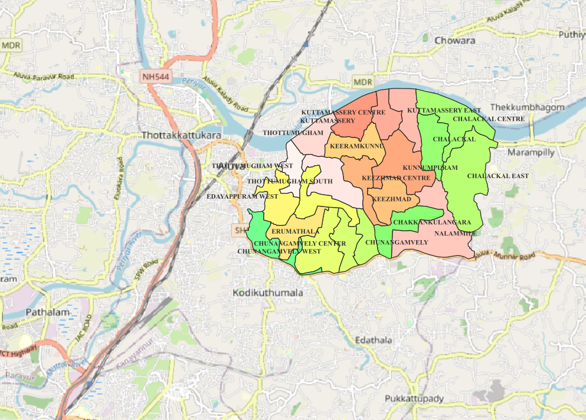

Administrative Location
Keezhmad Grama Panchayat is located in Ernakulam district, Kerala, within the Aluva region. It is part of the rural local self-government system.

കീഴ്മാട് ഗ്രാമപഞ്ചായത്ത്
Ernakulam District | Kerala, India
Geographical Information & Resource Mapping Project
Explore the geographical characteristics, administrative boundary, local resources, and spatial information of Keezhmad Grama Panchayat through an integrated digital information and resource mapping platform.
Explore Resource MapAn introduction to the local administrative and geographical setting
Keezhmad Grama Panchayat is a local self-government institution situated in Ernakulam district of Kerala, India. Located within the Aluva region, the Panchayat forms part of Kerala's decentralised system of rural administration and local development.
The Panchayat plays an important role in supporting community development, local infrastructure, public services, environmental management, and the planning of basic facilities for residents. Local self-government institutions provide an important connection between government programmes and the needs of individual communities.
From a geographical perspective, understanding the distribution of settlements, transport networks, land use, water resources, and public facilities is essential for effective spatial planning. Digital mapping and Geographic Information Systems (GIS) can support this process by presenting information in an accessible and organised format.

Administrative, environmental, and spatial characteristics
Keezhmad Grama Panchayat is located in Ernakulam district, Kerala, within the Aluva region. It is part of the rural local self-government system.
The geographical environment includes settlements, vegetation, local drainage systems, and land-use patterns that influence environmental planning.
Land-use mapping helps identify residential areas, agricultural spaces, roads, vegetation, and other categories relevant to local planning.
Road networks connect settlements and public facilities. Mapping transportation infrastructure helps examine accessibility and spatial connectivity.
Educational institutions, healthcare services, government offices, and community facilities are important elements of local resource mapping.
Geographic Information Systems support the visualisation and analysis of administrative boundaries, infrastructure, environmental resources, and spatial relationships.
Spatial representation of the Keezhmad Grama Panchayat boundary

The administrative boundary map provides a spatial representation of Keezhmad Grama Panchayat. Administrative boundaries are fundamental geographical reference layers used in local-level planning, mapping, and resource assessment.
Boundary information helps identify the geographical extent of the study area and provides a framework for examining settlement patterns, infrastructure, land-use distribution, and environmental features.
When combined with other geographical datasets, boundary maps support spatial analysis and the preparation of thematic maps using GIS.
Digital GIS-based resource information platform
Resource mapping is an important component of geographical analysis and local development planning. It provides a systematic approach to identifying, organising, and visualising the spatial distribution of natural, social, and infrastructural resources.
The interactive resource map below provides access to the existing Keezhmad Panchayat mapping project. Explore the available spatial information using the map's navigation and interactive tools.
For a larger map view, open the resource mapping portal in a separate browser tab.
Open Full Resource Map ↗Supporting geographical understanding and evidence-based local planning
Resource mapping provides a geographical framework for understanding the relationship between people, infrastructure, and the physical environment. By representing different features spatially, it becomes possible to examine the distribution of resources and identify areas requiring additional planning attention.
GIS-based mapping can support the assessment of public service accessibility, transportation connectivity, land-use patterns, and environmental conditions. These applications are especially relevant at the Panchayat level, where development decisions directly influence local communities.
This website serves as an educational and geographical information platform, bringing together descriptive information, boundary mapping, and interactive spatial resources in a single digital interface.
Geographical information and resource mapping project
The Keezhmad Grama Panchayat geographical information website is designed to present local spatial information through a clear and accessible digital platform.
The project integrates an administrative boundary map, descriptive geographical information, and an existing interactive resource mapping application.
This is an independent educational and GIS resource mapping project. It is not the official government website of Keezhmad Grama Panchayat. The contact details provided are for the project, not the Panchayat office.